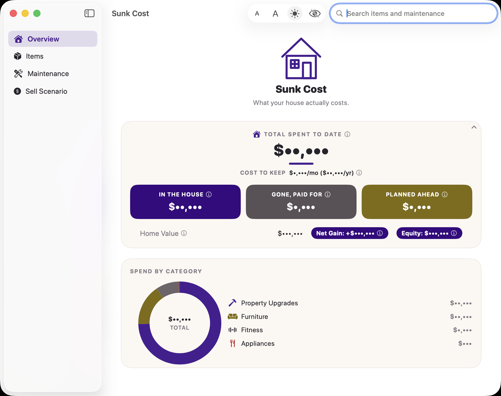
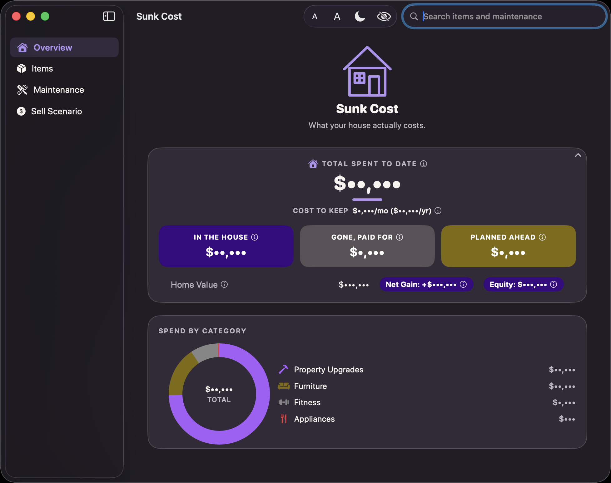
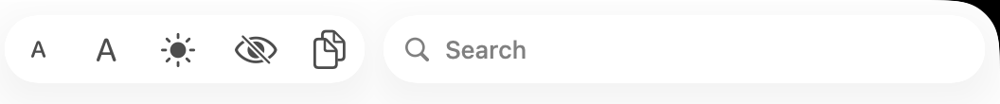
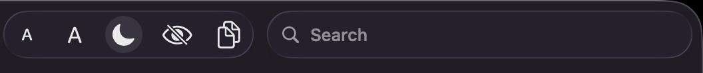

🏠 Overview
The dashboard — the first thing you see, and the fastest way to answer "so, what's this house cost me so far?"


Light and Dark mode — toggle with the sun/moon button in the toolbar.
What's on this screen
Total Spent to Date
The big number at the top. It adds up every Item you've marked Owned or Gone (Planned items don't count yet — they haven't cost you anything). Under it, Cost to Keep shows your recurring Maintenance total per month and per year.
The three tiles
- In the House — everything currently Owned
- Gone, Paid For — things you sold, gave away, or trashed (they still count toward what you've spent overall, just not what's currently sitting in the house)
- Planned Ahead — things you're thinking about but haven't bought yet
Home Value, Net Gain, and Equity
Once you've entered a Home Value and Purchase Price (both under Settings), you'll see:
- Net Gain — Home Value minus what you originally paid for the house
- Equity — Home Value minus what you still owe on the mortgage
Spend by Category
A ring chart breaking down where the money actually went — Furniture vs. Property Upgrades vs. Appliances, whatever categories you've used. The categories themselves come entirely from what you type when adding Items — there's no fixed list to pick from.
The toolbar, top-right


These five controls are always there, no matter which section you're looking at:
- A / A — shrink or grow the text size, app-wide
- ☀️ / 🌙 — switch between Light and Dark mode instantly (Settings has a third option, System, that follows your Mac automatically instead)
- 👁 — Privacy mode: blanks out every dollar figure with dots, for taking a screenshot to send someone without your real numbers in it. Click again to bring them back.
- 🔍 Search — searches by name, category, or notes across both Items and Maintenance at once, from anywhere in the app
- 📋 Copy Summary — (Sell Scenario tab only) copies all your numbers as plain text, ready to paste into a spreadsheet or a chat